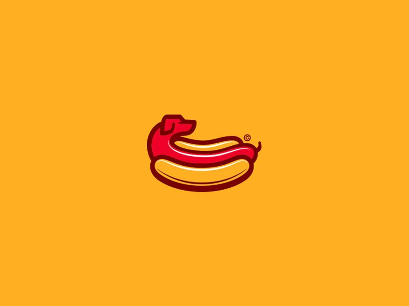
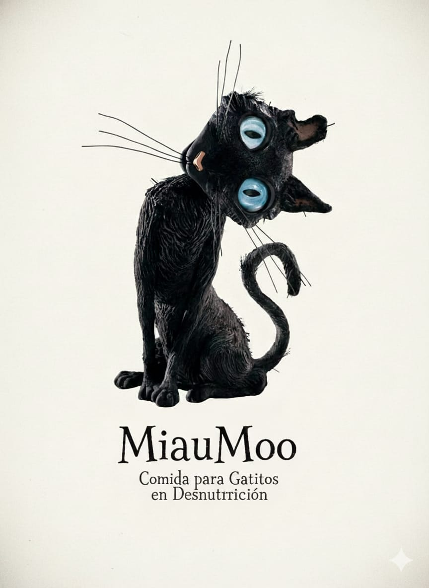
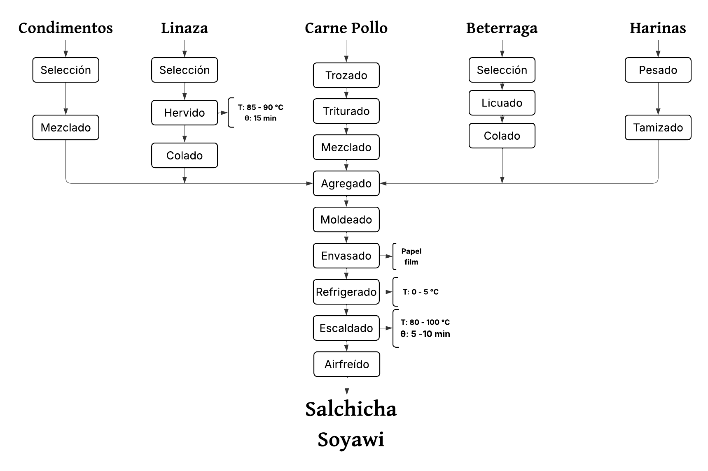
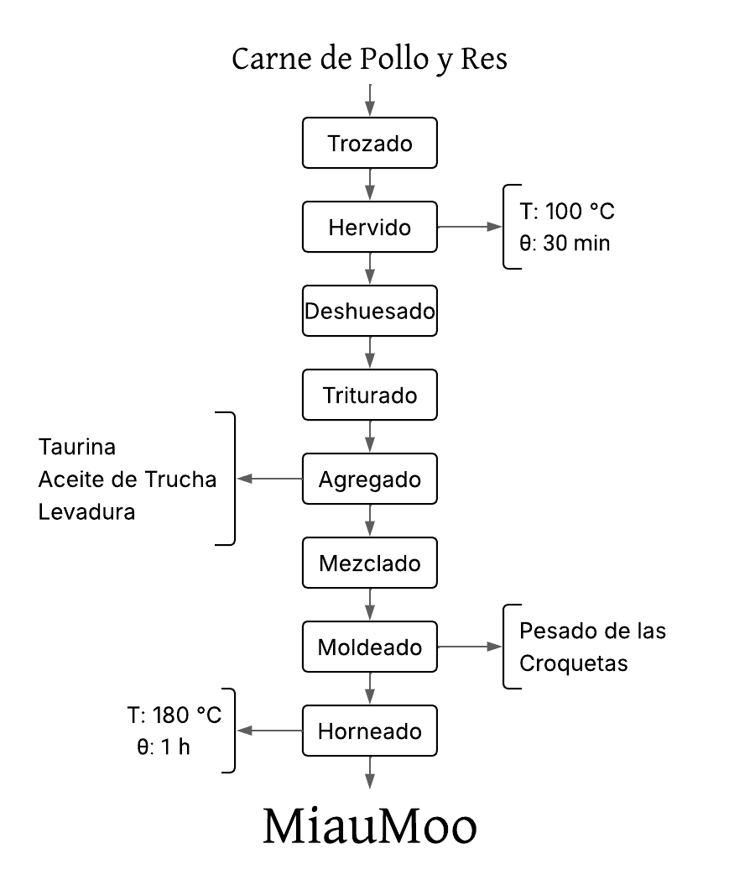
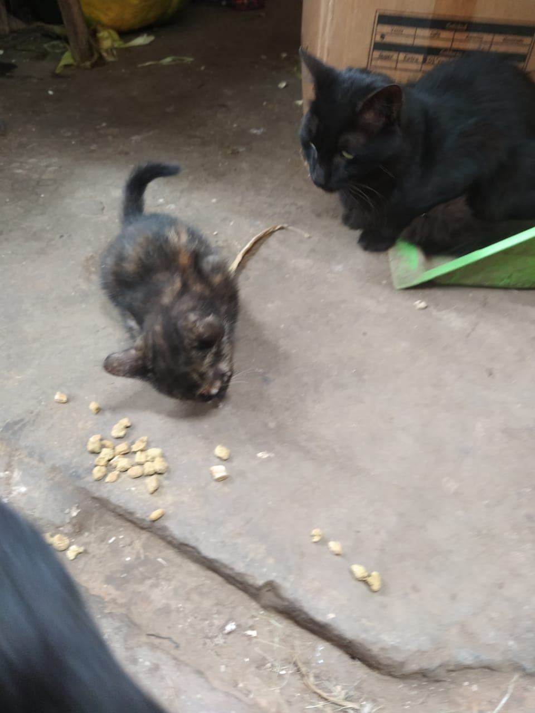
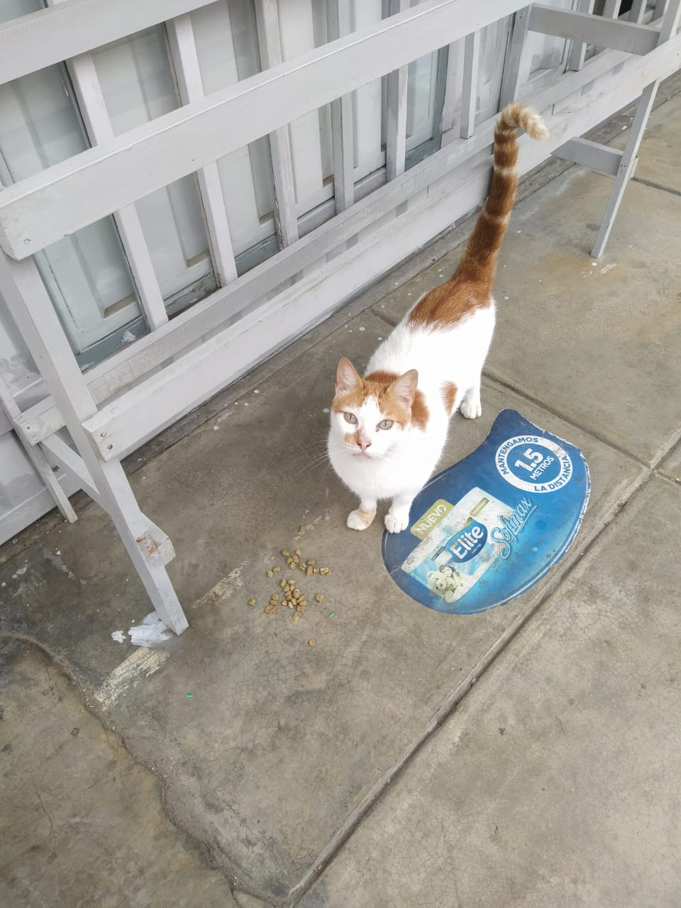
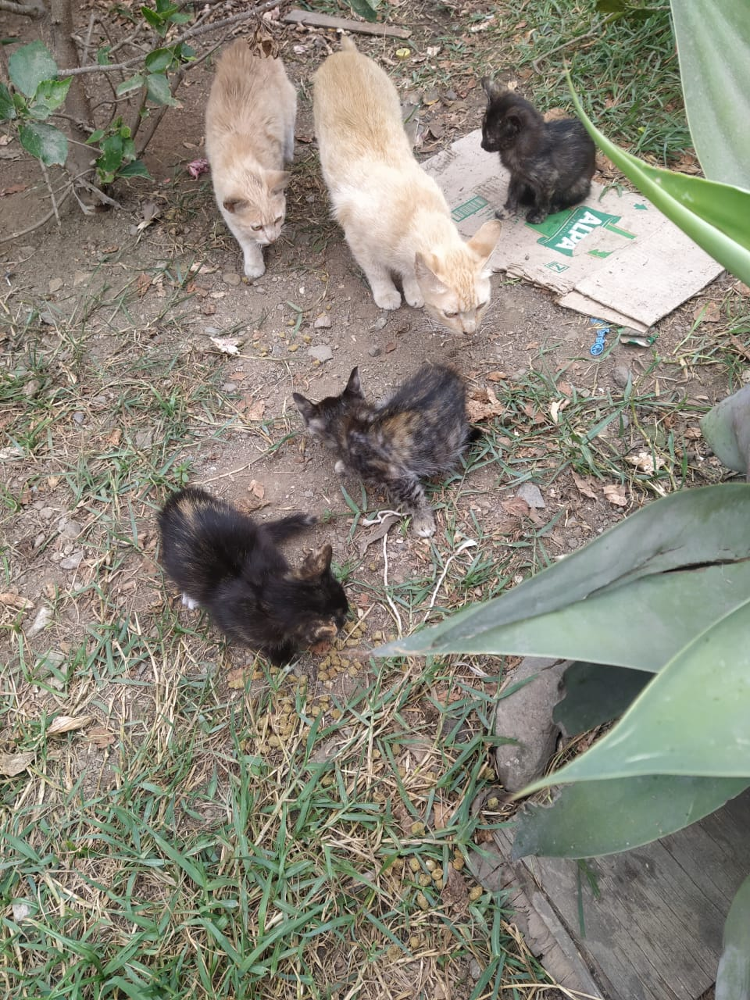

<!doctype html>
<html lang="es">
<head>
<meta charset="utf-8" />
<meta name="viewport" content="width=device-width,initial-scale=1" />
<title>AgroForum — Salchicha Soyawi & MiauMoo</title>
<style>
:root{
--bg-1: #fff8f3;
--bg-2: #fff5ee;
--beef:#e6b422; /* amarillo hotdog */
--cat:#6e8b69; /* azul gatitos */
--accent-soft: rgba(182,58,47,0.06);
--muted:#5e5e5e;
--radius:16px;
--maxw:1150px;
}
*{box-sizing:border-box;font-family:Inter, system-ui, -apple-system, "Segoe UI", Roboto, Arial;}
body{margin:0;background:linear-gradient(180deg,var(--bg-1),var(--bg-2));color:#222;display:flex;justify-content:center;padding:28px}
.wrap{width:100%;max-width:var(--maxw)}
header{display:flex;align-items:center;gap:14px;margin-bottom:18px}
.logo-wrap{display:flex;gap:12px;align-items:center}
#logo-img{width:72px;height:72px;border-radius:14px;object-fit:contain;background:#fff;border:1px solid rgba(0,0,0,0.04);box-shadow:0 8px 20px rgba(0,0,0,0.06);padding:6px}
.brand h1{margin:0;font-size:20px}
.lead{margin:0;color:var(--muted);font-size:13px}

.esencia-yellow {
  background: #ffe8a3 !important;   /* Amarillo suave sólido */
  border-left: 8px solid #e9a300;    /* Amarillo más fuerte tipo salchicha */
  padding: 22px;
  border-radius: 18px;
}
.header-yellow {
  background: #ffe8a3 !important;   /* Amarillo suave */
  border-left: 8px solid #e9a300;    /* Amarillo fuerte */
  padding: 18px;
  border-radius: 18px;
}
.esencia-crema {
  background: #f2ead8 !important;     /* Crema suave */
  border-left: 8px solid #c7b99b;     /* Crema más fuerte */
  padding: 22px;
  border-radius: 18px;
}
.esencia-verde {
  background: #a8c3a3 !important;     /* Verde pastel claro */
  border-left: 8px solid #6e8b69;     /* Verde más profundo */
  padding: 22px;
  border-radius: 18px;
  color: #ffffff;                     /* Texto claro para contraste */
}
.testi-container {
  display: flex;
  gap: 22px;
  padding: 20px 0;
  justify-content: space-between;
}
.esencia-block {
  border-left: 8px solid #6e8b69 !important;  /* Verde MiauMoo */
}
.testi-card {
  background: #ffffff;
  border: 12px solid #e3e3e3;
  border-radius: 16px;
  padding: 0;
  width: 30%;
  overflow: hidden; /* Hace que la imagen rectangular quede perfecta */
  display: flex;
  flex-direction: column;
  text-align: center;
}

.testi-card img {
  width: 100%;     /* OCUPA TODO EL ANCHO */
  height: 180px;   /* RECTANGULAR GRANDE */
  object-fit: contain; /* Para que no se deforme */
  object-position: center center;
  display: block;
  background: #f6f6f6;        /* color de fondo visible si hay espacios */
  padding: 8px;  
}

.testi-content {
  padding: 15px 18px;
  display: flex;
  flex-direction: column;
  gap: 6px;
}

.testi-card p {
  margin: 0;
}


/* Sección unificada de Balance solo para Salchicha Soyawi */
.cost-section-unified {
  background: linear-gradient(180deg,#fff7f2,#fff4ec); /* tono suave anaranjado/salmón */
  border-left: 6px solid var(--beef); /* color del producto */
  padding: 24px;
  border-radius: 14px;
  margin: 24px 0;
  box-shadow: 0 8px 28px rgba(0,0,0,0.06);
}

/* Título */
.cost-section-unified h2 { 
  color: var(--beef); 
  margin: 0 0 10px 0; 
  font-size: 26px; 
}

/* Subtítulos */
.cost-section-unified .subtitle {
  font-weight: 700;
  color: #7f3b1f; /* marrón-anaranjado elegante */
  margin: 14px 0 8px;
}

/* Tablas */
.cost-section-unified table {
  width: 100%;
  border-collapse: collapse;
  margin-bottom: 12px;
  font-size: 14px;
}

.cost-section-unified th,
.cost-section-unified td {
  padding: 10px 12px;
  border: 1px solid rgba(0,0,0,0.04);
  text-align: left;
}

/* Cabeceras con color Soyawi */
.cost-section-unified thead th {
  background: var(--beef);
  color: #fff;
  font-weight: 700;
}

/* Subtotal */
.cost-section-unified .table-note {
  text-align: right;
  font-weight: 800;
  color: var(--beef);
  margin-top: 8px;
}

/* Mini-cards (CIF + Indicadores) */
.cost-section-unified .mini-card {
  border-left: 6px solid var(--beef);
  background: #ffffff;
  padding: 14px;
  border-radius: 14px;
  box-shadow: 0 4px 12px rgba(0,0,0,0.05);
  flex: 1;
  min-width: 260px;
}

/* Tablas internas de mini-cards */
.cost-section-unified .indirect-table thead th,
.cost-section-unified .indicators-table thead th {
  background: var(--beef);
  color: #fff;
  font-weight: 700;
}

/* Contenedor de las dos tarjetas (CIF + Indicadores) */
.costs-indirect-inline {
  display: flex;
  gap: 18px;
  align-items: flex-start;
  flex-wrap: wrap;
  margin-top: 8px;
}

@media (max-width:900px){
  .costs-indirect-inline { flex-direction: column; }
}


/* Sección unificada de Balance solo para MiauMoo */
.cost-section-miau {
  background: linear-gradient(180deg,#fbfff8,#f7fff3); /* verde suave como la sección actual */
  border-left: 6px solid var(--cat); /* color de MiauMoo */
  padding: 24px;
  border-radius: 14px;
  margin: 24px 0;
  box-shadow: 0 8px 28px rgba(0,0,0,0.06);
}

/* Título */
.cost-section-miau h2 { 
  color: var(--cat); 
  margin: 0 0 10px 0; 
  font-size: 26px; 
}

/* Subtítulos */
.cost-section-miau .cost-subtitle-miau {
  font-weight: 700;
  color: #3a5f32; /* verde solemne */
  margin: 14px 0 8px;
}

/* Tablas */
.cost-section-miau table {
  width: 100%;
  border-collapse: collapse;
  margin-bottom: 12px;
  font-size: 14px;
}

.cost-section-miau th,
.cost-section-miau td {
  padding: 10px 12px;
  border: 1px solid rgba(0,0,0,0.04);
  text-align: left;
}

/* Cabeceras con el color MiauMoo */
.cost-section-miau thead th {
  background: var(--cat);
  color: #fff;
  font-weight: 700;
  padding: 10px 12px;
}

/* Subtotal */
.cost-section-miau .cost-resumen-miau {
  text-align: right;
  font-weight: 800;
  color: var(--cat);
  margin-top: 8px;
}

/* Mini-cards (CIF + Indicadores) */
.cost-section-miau .mini-card {
  border-left: 6px solid var(--cat);
  background: #ffffff;
  padding: 14px;
  border-radius: 14px;
  box-shadow: 0 4px 12px rgba(0,0,0,0.05);
  flex: 1;
  min-width: 260px;
}

/* Tablas internas de las mini-cards */
.cost-section-miau .indirect-table thead th,
.cost-section-miau .indicators-table thead th {
  background: var(--cat);
  color: #fff;
  font-weight: 700;
}

/* Contenedor de CIF e Indicadores */
.costs-indirect-inline {
  display: flex;
  gap: 18px;
  align-items: flex-start;
  flex-wrap: wrap;
  margin-top: 8px;
}

@media (max-width:900px){
  .costs-indirect-inline { flex-direction: column; }
}


#selector-area{display:block;margin-bottom:18px}
.giant-grid{display:flex;gap:22px}
.giant-card{width: 100% !important; height: 480px !important;max-width: 100% !important;flex:1;border-radius:20px;border-radius: 20px;overflow:hidden;position:relative;cursor:pointer;box-shadow:0 12px 30px rgba(0,0,0,0.08);border:1px solid rgba(0,0,0,0.04)}
.giant-card .imgwrap{height:100% !important;height: 100%;display:block}
.giant-card img{width:100%;height:100%;object-fit:contain !important;object-position: center center;display:block}
.giant-card .label{position:absolute;left:18px;bottom:18px;background:linear-gradient(90deg, rgba(0,0,0,0.45), rgba(0,0,0,0.25));color:#fff;padding:10px 14px;border-radius:10px;font-weight:700;font-size:18px}


main{display:block}
.card{background:transparent;padding:0;margin-bottom:0}
.content{min-height:200px}
.product-content{display:none;opacity:0;transform:translateY(12px);transition:all .34s cubic-bezier(.2,.9,.25,1)}
.product-content.active{display:block;opacity:1;transform:none}


.pc-header{display:flex;align-items:center;gap:16px;margin-bottom:16px;padding:16px;border-radius:12px}
.pc-header .cover{width:120px;height:120px;border-radius:12px;object-fit:cover;border:6px solid rgba(255,255,255,0.6);box-shadow:0 10px 30px rgba(0,0,0,0.08)}
.pc-header .prod-icon{width:56px;height:56px;border-radius:10px;object-fit:cover;border:3px solid rgba(255,255,255,0.7);box-shadow:0 6px 14px rgba(0,0,0,0.08)}


.sections{display:block;margin-top:8px}
section.block {background:linear-gradient(180deg,#fff,#fffaf9);padding:14px;border-radius:12px;border:1px solid rgba(0,0,0,0.04);margin-bottom:12px}
.flow{background:linear-gradient(180deg,#fff,#fffafc);padding:12px;border-radius:10px;border:1px dashed rgba(0,0,0,0.06);text-align:center}
.testi{display:flex;gap:12px;align-items:center}
.testi img{width:56px;height:56px;border-radius:8px;object-fit:cover}


.back-row{display:flex;justify-content:flex-end;margin-bottom:8px}
.back-btn{background:#fff;border:1px solid rgba(0,0,0,0.06);padding:8px 12px;border-radius:10px;cursor:pointer;color:#222;box-shadow:0 6px 18px rgba(0,0,0,0.06)}
.muted{color:var(--muted)}


/* COLORES PERSONALIZADOS */
.prod-beef .pc-header{background:linear-gradient(90deg, rgba(230,180,34,0.18), rgba(255,220,120,0.12));}
.prod-beef .label-accent{color:var(--beef);}
.prod-beef section.block{border-left:6px solid var(--beef)}


.prod-cat .pc-header{background:linear-gradient(90deg, rgba(59,108,209,0.18), rgba(120,160,255,0.12));}
.prod-cat .label-accent{color:var(--cat);}
.prod-cat section.block{border-left:6px solid var(--cat)}

@media (max-width:720px){
  .testi-card { width: 100%; }
  .testi-container { flex-direction: column; gap: 12px; }
  .testi-card img { width: 100%; height: auto; border-radius: 10px; }
}

@media (max-width:980px){
  #salchicha .pc-header .cover,
  #cover-prod1 {
    max-width: 260px;
    margin-bottom: 8px;
  }
  #salchicha .pc-header { flex-direction: column; align-items: flex-start; gap:12px; }
}
/* ===== Ajustes SOLO para la imagen principal de SALCHICHA ===== */
#salchicha .pc-header .cover,
#cover-prod1 {
  width: 100%;            /* ocupa todo el ancho disponible dentro del header */
  max-width: 420px;       /* evita que crezca demasiado en pantallas grandes (ajústalo) */
  height: auto;           /* mantiene proporción original */
  object-fit: contain;    /* muestra la imagen completa sin recortar */
  object-position: center center;
  display: block;
  border-radius: 12px;
  border: 6px solid rgba(255,255,255,0.6); /* mantiene el estilo anterior */
  box-shadow: 0 10px 30px rgba(0,0,0,0.08);
}
@media (max-width:980px){
  #salchicha .pc-header .cover,
  #cover-prod1 {
    max-width: 260px;
    margin-bottom: 8px;
  }
  #salchicha .pc-header { flex-direction: column; align-items: flex-start; gap:12px; }
}


/* ===== Ajustes SOLO para la imagen principal de MIAUMOO (para que quede igual que Salchicha) ===== */
#miaumoo .pc-header .cover,
#cover-prod2 {
  width: 100%;            /* ocupa todo el ancho disponible dentro del header */
  max-width: 420px;       /* mismo límite que Salchicha (ajústalo si quieres) */
  height: auto;           /* mantiene proporción original */
  object-fit: contain;    /* muestra la imagen completa sin recortar */
  object-position: center center;
  display: block;
  border-radius: 12px;
  border: 6px solid rgba(255,255,255,0.6); /* mantiene el mismo estilo de borde */
  box-shadow: 0 10px 30px rgba(0,0,0,0.08);
}

/* Mismo comportamiento responsive que Salchicha */
@media (max-width:980px){
  #miaumoo .pc-header .cover,
  #cover-prod2 {
    max-width: 260px;
    margin-bottom: 8px;
  }
  #miaumoo .pc-header { flex-direction: column; align-items: flex-start; gap:12px; }
}
/* ===== Ajuste de TIPOGRAFÍA SOLO para MIAUMOO (que el texto no se vea pequeño) ===== */
#miaumoo .pc-header strong {
  font-size: 24px !important;   /* título */
  line-height: 1.3;
}

#miaumoo .pc-header p,
#miaumoo .pc-header .muted {
  font-size: 18px !important;   /* texto descriptivo */
  line-height: 1.45;
}

#miaumoo .pc-header .prod-icon {
  width: 64px !important;
  height: 64px !important;
}
</style>
</head>
<body>
</html>
  <div class="wrap">
    <header>
      <div class="logo-wrap">
        <rect width=\'100%\' height=\'100%\' fill=\'%23ffd9a1\'/><text x=\'50%\' y=\'55%\' dominant-baseline=\'middle\' text-anchor=\'middle\' font-size=36 fill=\'%23b63a2f\' font-family=\'Arial\'>AF</text></svg>'" />
        <div class="brand">
          <h1>AgroForum — Productos</h1>
          <p class="lead">Presentación de prototipos: Salchicha Soyawi y MiauMoo.</p>
        </div>
      </div>
      <div class="muted" id="meta-text">Origen de las materias primas: Pollo &amp; Res</div>
    </header>

    <!-- BIG PRODUCT SELECTOR (only these giant images on landing) -->
    <div id="selector-area">
      <div class="giant-grid">
        <div class="giant-card" id="giant-sal" role="button" tabindex="0">
          <div class="imgwrap"></div>
          <div class="label">Salchicha Soyawi</div>
        </div>

        <div class="giant-card" id="giant-mia" role="button" tabindex="0">
          <div class="imgwrap"></div>
          <div class="label">MiauMoo (Croquetas)</div>
        </div>
      </div>
    </div>

    <main>
      <section class="card content" id="content-area">
        <!-- SALCHICHA (single view) -->
        <article id="salchicha" class="product-content prod-beef" aria-hidden="true">
          <div class="back-row"><button class="back-btn" data-target="selector">← Volver</button></div>

          <div class="pc-header header-yellow">
            
            <div style="display:flex;flex-direction:column;gap:6px">
              <div style="display:flex;gap:12px;align-items:center">
                
                <div>
                  <h1 style="font-size:32px; margin:0; font-weight:800;">SALCHICHA SOYAWI</h1>
<div class="muted" style="font-size:16px;">Salchicha fortificada con Tarwi y Soya</div>

                </div>
              </div>
            </div>
          </div>

          <div class="sections">
            <!-- same content blocks as before -->
            <section class="block">
              <h3>Nuestra Esencia</h3>
              <p class="muted">La Salchicha Soyawi es un alimento elaborado a partir de pollo y una mezcla funcional de harinas vegetales (soya, tarwi, avena, habas y yuca). Está diseñada como una alternativa nutritiva, económica y con un enfoque agroindustrial sostenible. Su formulación combina proteínas de alta calidad, fibra dietaria, ácidos grasos esenciales y compuestos antioxidantes naturales, lo que la convierte en un producto versátil para consumo estudiantil, familiar y programas alimentarios.</p>
            </section>

            <section class="block esencia-yellow">
              <h3>Nuestra fórmula</h3>
              <p class="muted">- Carne de pollo seleccionada y previamente desinfectada. <br>- Mezcla de harinas: soya, tarwi, avena, habas y yuca (tamizadas). <br>- Linaza hervida para aportar mucílagos naturales como aglutinante. <br>-Betarraga licuada como colorante natural y fuente de antioxidantes.<br>-Condimentos en polvo: ajo, cebolla, comino, cúrcuma, paprika, orégano, pimienta y sal. </p>
            </section>

            <section class="block flow">
              <h3 style="text-align:left;">Flujograma</h3>
              
            </section>

            <section class="block esencia-yellow">
              <h3>Beneficios</h3>
              <p class="muted">- Alto aporte proteico gracias al pollo y a las harinas de soya y tarwi. <br>- Mejor digestibilidad, por la presencia de avena y mucílagos de la linaza. <br>- Color y antioxidantes naturales, sin uso de colorantes artificiales. <br>-Aporte de fibra dietaria, que favorece saciedad y salud intestinal.<br>-Producto accesible y de bajo costo, pensado para mejorar la nutrición en poblaciones vulnerables. </p>
            </section>

            <section class="block">
              <h3>¿Para qué se diseñó?</h3>
              <p class="muted">La Salchicha Soyawi está diseñada para:<br>-Estudiantes que buscan alimentos económicos y nutritivos.<br>-Familias que desean opciones con mejor perfil nutricional que los embutidos tradicionales.<br>-Proyectos sociales, comedores y programas alimentarios con enfoque de seguridad alimentaria.<br>-Consumidores que buscan productos bajos en aditivos, con ingredientes naturales.</p>
            </section>

            <section class="block esencia-yellow">
              <h3>Enfoque nutricional</h3>
              <p class="muted">La propuesta Soyawi se fundamenta en una formulación equilibrada que combina:<br>-Proteína animal + proteína vegetal complementaria, logrando un perfil de aminoácidos más completo.<br>-Fibra soluble de la linaza y avena, que contribuye a la salud digestiva y a la reducción del índice glicémico.<br>-Tarwi y soya, que aportan grasas saludables, calcio, hierro y lisina.<br>-Betarraga, que agrega betalaínas antioxidantes y un color natural estable al calor.<br>-Procesos tecnológicos que conservan nutrientes, como el escaldado corto y la cocción en airfryer.<br>El uso de harinas y colorantes naturales se alinea con tendencias actuales de consumo saludable y con la revalorización de ingredientes peruanos.</p>
            </section>

            <section class="block">
              <h3>Historia</h3>
              <p class="muted">La Salchicha Soyawi nace como una propuesta universitaria del curso de Procesos Agroindustriales, con el objetivo de crear un alimento nutritivo, económico y viable para la realidad peruana. Observamos que muchos embutidos comerciales contienen altos niveles de grasa, aditivos sintéticos y colorantes artificiales. Por ello, buscamos desarrollar una alternativa más saludable utilizando ingredientes locales y técnicas sencillas pero efectivas.

La idea evolucionó al integrar harinas andinas y mucílagos naturales como la linaza, logrando una textura adecuada sin necesidad de químicos. El producto final representa una combinación de tecnología agroindustrial accesible, aprovechamiento de recursos y enfoque social.</p>
            </section>

<section class="block esencia-yellow">
              <h3>Testimonios</h3>
                <div class="testi-container">

                <div class="testi-card">

                  
                  <div class="testi-content">
<strong>1. Daniela, 21 años – Estudiante de Ingeniería</strong>
<p class="muted">"Me sorprendió que una salchicha hecha con harinas tenga tan buena textura. La uso en mis almuerzos porque es económica y llena bastante."</p>
</div>
</div>

                  <div class="testi-card">
                  
                  <div class="testi-content">
<strong>2. Sr. Luis, 45 años – Padre de familia</strong>
<p class="muted">"La Soyawi me parece una buena alternativa para mis hijos. No tiene ese color artificial de las salchichas comerciales y el sabor es suave."</p>
</div>
</div>

                  <div class="testi-card">
                  
                  <div class="testi-content">
<strong>3. Rosa, 33 años – Emprendedora de snacks saludables</strong>
<p class="muted">"Me interesa usarla en mis combos saludables. El hecho de que tenga betarraga y linaza es un plus enorme para mis clientes."</p>
</div>
                </div>
              </div>
            </section>

<section id="balance-soyawi" class="cost-section-unified">

  <h2>Balance de Costos – Salchicha Soyawi</h2>

  <!-- A. Costos Directos (Materia Prima) -->
  <div class="subtitle">Costos Directos — Materia Prima Principal</div>

  <table aria-label="Materia prima">
    <thead>
      <tr>
        <th>Ingrediente</th><th>Cantidad Usada</th><th>Costo Unitario</th><th>(S/ por gr, ml o unidad)</th><th>Costo Parcial (S/)</th>
      </tr>
    </thead>
    <tbody>
      <tr><td>Pollo</td><td>1200 g</td><td>0.01</td><td>S/gr</td><td>15.25</td></tr>
      <tr><td>Harina de yuca</td><td>120 g</td><td>0.01</td><td>S/gr</td><td>1.20</td></tr>
      <tr><td>Harina de tarwi</td><td>80 g</td><td>0.06</td><td>S/gr</td><td>4.80</td></tr>
      <tr><td>Harina de soya</td><td>80 g</td><td>0.01</td><td>S/gr</td><td>0.64</td></tr>
      <tr><td>Harina de habas</td><td>40 g</td><td>0.01</td><td>S/gr</td><td>0.32</td></tr>
      <tr><td>Harina de avena</td><td>40 g</td><td>0.01</td><td>S/gr</td><td>0.32</td></tr>
      <tr><td>Linaza</td><td>40 g</td><td>0.02</td><td>S/gr</td><td>0.64</td></tr>
    </tbody>
  </table>

  <!-- Aditivos -->
  <div class="subtitle">Aditivos y Sazonadores</div>
  <table aria-label="Aditivos">
    <thead>
      <tr><th>Ingrediente</th><th>Cantidad Usada</th><th>Costo Unitario</th><th>(S/ por gr, ml o unidad)</th><th>Costo Parcial (S/)</th></tr>
    </thead>
    <tbody>
      <tr><td>Sal</td><td>32 g</td><td>0.00</td><td>S/gr</td><td>0.08</td></tr>
      <tr><td>Ajo en polvo</td><td>4 g</td><td>0.25</td><td>S/gr</td><td>1.00</td></tr>
      <tr><td>Cebolla en polvo</td><td>4 g</td><td>0.25</td><td>S/gr</td><td>1.00</td></tr>
      <tr><td>Pimienta y comino</td><td>10 g</td><td>0.20</td><td>S/gr</td><td>2.00</td></tr>
      <tr><td>Limón</td><td>0.25 unidades</td><td>0.40</td><td>S/unidad</td><td>0.10</td></tr>
      <tr><td>Cúrcuma</td><td>10 g</td><td>0.32</td><td>S/gr</td><td>3.20</td></tr>
      <tr><td>Beterraga</td><td>2 unidades</td><td>0.80</td><td>S/unidad</td><td>1.60</td></tr>
    </tbody>
  </table>

  <div class="table-note">Subtotal Costos Directos: <strong>S/ 32.15</strong></div>

  <!-- Costos Indirectos + Indicadores: dentro de la misma sección, a la derecha/izquierda según espacio -->
  <div class="costs-indirect-inline">
    <div class="mini-card">
      <div style="font-weight:700; margin-bottom:6px;">Costos Indirectos — Salchicha Soyawi</div>
      <div class="muted" style="font-size:13px; margin-bottom:8px;">Costos indirectos de fabricación (CIF)</div>
      <table class="indirect-table" style="width:100%; border-collapse:collapse;">
        <tr><th>Concepto</th><th>Costo (S/)</th></tr>
        <tr><td>Energía eléctrica</td><td>1.00</td></tr>
        <tr><td>Gas</td><td>1.00</td></tr>
        <tr><td>Agua</td><td>0.50</td></tr>
        <tr><td>Mano de obra directa</td><td>4.00</td></tr>
        <tr><td>Empaque</td><td>0.20</td></tr>
        <tr><td>Depreciación de equipos</td><td>1.50</td></tr>
        <tr><th>Total CIF</th><th>8.20</th></tr>

      </table>
    </div>

    <div class="mini-card">
      <div style="font-weight:700; margin-bottom:6px;">Indicadores</div>
      <table class="indirect-table" style="width:100%; border-collapse:collapse;">
       <tr><td>Peso total del lote</td><td>2 kg</td></tr>
        <tr><td>Rendimiento</td><td>90%</td></tr>
        <tr><td>Costo total por lote</td><td>S/ 40.35</td></tr>
        <tr><td>Costo por kg</td><td>S/ 20.18</td></tr>
        <tr><td>Ganancia</td><td>50%</td></tr>
        <tr><td>Precio Venta (S/kg)</td><td><strong>S/ 30.26</strong></td></tr>

      </table>
    </div>
  </div>

</section>


            <section class="block esencia-yellow">
              <h3>Contacto</h3>
              <p class="muted"><strong>Para más información sobre el proyecto, colaboraciones o muestras de producto:</strong>
<br>Equipo Soyawi – Facultad de Ingeniería Agroindustrial</strong>
<br>Correo: FARIDHC2920@OUTLOOK.ES <br>Teléfono: 903 060 359<br>Ciudad: Lima – Perú
            </section>
          </div>
        </article>

        <!-- MIAUMOO (single view) -->
        <article id="miaumoo" class="product-content prod-cat" aria-hidden="true">
          <div class="back-row"><button class="back-btn" data-target="selector">← Volver</button></div>

          <div class="pc-header esencia-verde">
            
            <div style="display:flex;flex-direction:column;gap:6px">
              <div style="display:flex;gap:12px;align-items:center">
                
                <div>
                 <h1 style="font-size:32px; margin:0; font-weight:800;">MIAUMOO</h1>
<div class="muted" style="font-size:16px;">Croquetas Nutritivas para Gatitos Desnutridos</div>

                </div>
              </div>
            </div>
          </div>

          <div class="sections">
            <section class="block esencia-crema">
              <h3>Nuestra Esencia</h3>
              <p class="muted">Miaumoo es un alimento funcional especialmente formulado para gatitos en estado de desnutrición leve a moderada, brindando una recuperación progresiva, segura y científicamente respaldada.
Nuestro producto combina proteínas de alta digestibilidad, micronutrientes esenciales, ingredientes naturales y un proceso tecnológico que garantiza inocuidad, estabilidad y máxima biodisponibilidad nutricional.

Miaumoo nace como una propuesta agroindustrial innovadora, enfocada en mejorar la salud animal y contribuir al bienestar de mascotas vulnerables.</p>
            </section>

            <section class="block esencia-verde">
              <h3>Nuestra fórmula</h3>
              <p class="muted">Cada croqueta ha sido formulada con ingredientes seleccionados por su valor nutricional, digestibilidad y aporte energético óptimo:<br>* Carne magra de pollo – fuente de proteínas de alto valor biológico.<br>* Hígado de pollo – aporta hierro, vitamina A, vitaminas del complejo B y aminoácidos esenciales.<br>*Avena y harina de arroz – carbohidratos suaves para una digestión fácil.<br>* Zanahoria y zapallo – fibra prebiótica natural, vitaminas antioxidantes.<br>* Huevo – proteínas completas, colina y grasas saludables.<br>* Aceite vegetal + extracto natural de romero – fuente de energía y antioxidantes.<br>* Taurina – aminoácido esencial para la salud ocular, cardíaca y neurológica.<br>* Levadura nutricional – vitaminas B, palatabilidad y soporte inmunológico.<br>* Carbonato de calcio – soporte óseo y balance mineral ideal.</p>
            </section>

            <section class="block esencia-crema">
              <h3>Flujograma</h3>
              
            </section>

            <section class="block esencia-verde">
              <h3>Beneficios</h3>
              <p class="muted">✔ Recuperación nutricional progresiva gracias a proteínas de alta calidad.
<br>✔ Mejora del pelaje y la piel por aporte de grasas saludables y vitaminas.<br>✔ Digestión suave, ideal para gatitos debilitados.<br>✔ Refuerzo inmunológico mediante vitaminas, minerales y antioxidantes naturales.
<br>✔ Aporte energético elevado, necesario para estados de desnutrición.<br>✔ Croquetas pequeñas, fáciles de masticar para gatitos con baja fuerza mandibular.
</p>
            </section>

            <section class="block esencia-crema">
              <h3>¿Para qué gatitos está diseñado?</h3>
              <p class="muted">Miaumoo está formulado para:<br>-Gatitos desnutridos o con bajo peso.<br>-Gatitos rescatados de la calle o abandono.<br>-Gatitos en recuperación post-enfermedad.<br>-Gatitos con problemas de absorción ligera o apetito reducido.<br>-Gatitos de 1 a 12 meses que requieren un aporte nutricional reforzado.<br>No está diseñado para gatos adultos sanos (pueden consumirlo, pero está optimizado para recuperación temprana).</p>
            </section>

            <section class="block esencia-verde">
              <h3>Desarrollo</h3>
              <p class="muted">El desarrollo de Miaumoo se realizó siguiendo estándares técnicos de inocuidad y calidad:<br>1. Higiene y Manejo Sanitario<br>-Superficie limpia, utensilios sanitizados, manejo en frío.<br>2. Procesamiento de Proteínas (carne + hígado)<br>-Cocción ≥75 °C para garantizar inocuidad microbiológica.<br>-Molido fino <4 mm para mayor digestibilidad.<br>3. Mezclado Nutricional Controlado<br>-Incorporación de ingredientes secos balanceados (avena, arroz, levadura, carbonato).<br>-Integración precisa de proteína, vegetales y huevo.<br>4. Incorporación Tecnológica<br>-Disolución de taurina para asegurar distribución homogénea.<br>-Integración de antioxidantes naturales (romero).<br>5. Formado y Secado Tecnificado<br>-Corte uniforme (1–1.5 cm).<br>-Horneado en dos fases para obtener humedad ≤10% (mayor vida útil).<br>6. Enfriado y Empaque<br>-Empaque hermético o al vacío, protegido de humedad y oxígeno.<br>-Almacenamiento <25°C.<br>Aporte Innovador:
<br>Uso de proceso artesanal–tecnificado que equilibra valor nutricional, seguridad alimentaria y accesibilidad económica, dirigido a un nicho desatendido: gatitos desnutridos.</p>
            </section>

            <section class="block esencia-crema">
              <h3>Historia</h3>
              <p class="muted">Miaumoo nació como un proyecto inspirado en los gatitos rescatados que, tras situaciones de abandono o maltrato, necesitaban un alimento especial para recuperar peso y vitalidad.
Observamos que muchos productos comerciales se enfocan en gatitos sanos, dejando un vacío nutricional en animales vulnerables.
Por eso desarrollamos una fórmula:<br>✔Accesible<br>✔Nutritiva<br>✔Científicamente respaldada<br>✔Elaborada con ingredientes locales<br>✔Adaptada a necesidades reales de rescate y recuperación<br>Miaumoo representa un puente entre el sector agroindustrial y la protección animal.</p>
            </section>

<section id="costos-miaumoo" class="cost-section-miau">

  <h2>Balance de Costos – MiauMoo</h2>

  <div class="cost-subtitle-miau">Costos Directos — Materia Prima Principal</div>

  <table class="cost-table-miau" aria-label="Materia prima miaumoo">
    <thead>
      <tr>
        <th>Ingrediente</th><th>Cantidad Usada</th><th>Costo Unitario</th><th>(S/ por gr, ml o unidad)</th><th>Costo Parcial (S/)</th>
      </tr>
    </thead>
    <tbody>
      <tr><td>Carne</td><td>2000 g</td><td>0.03</td><td>S/gr</td><td>58.00</td></tr>
      <tr><td>Hígado</td><td>400 g</td><td>0.01</td><td>S/gr</td><td>3.20</td></tr>
      <tr><td>Espinaca</td><td>100 g</td><td>0.02</td><td>S/gr</td><td>1.67</td></tr>
      <tr><td>Harina de Arroz</td><td>700 g</td><td>0.02</td><td>S/gr</td><td>11.20</td></tr>
      <tr><td>Harina de Avena</td><td>800 g</td><td>0.01</td><td>S/gr</td><td>9.60</td></tr>
      <tr><td>Huevo cocido</td><td>4 u</td><td>0.60</td><td>S/u</td><td>2.40</td></tr>
    </tbody>
  </table>

  <div class="cost-subtitle-miau" style="margin-top:14px;">Aditivos y Sazonadores</div>

  <table class="cost-table-miau" aria-label="Aditivos miaumoo">
    <thead>
      <tr>
        <th>Ingrediente</th><th>Cantidad Usada</th><th>Costo Unitario</th><th>(S/ por gr, ml o unidad)</th><th>Costo Parcial (S/)</th>
      </tr>
    </thead>
    <tbody>
      <tr><td>Taurina</td><td>5 g</td><td>0.50</td><td>S/gr</td><td>2.50</td></tr>
      <tr><td>Aceite de trucha</td><td>250 mL</td><td>0.18</td><td>S/mL</td><td>45.83</td></tr>
      <tr><td>Levadura de cerveza</td><td>150 g</td><td>0.05</td><td>S/gr</td><td>7.50</td></tr>
      <tr><td>CaCO3</td><td>1 u</td><td>1.00</td><td>S/u</td><td>1.00</td></tr>
    </tbody>
  </table>

  <div class="cost-resumen-miau">Subtotal Costos Directos: <strong>S/ 142.90</strong></div>

  <div class="costs-indirect-inline" style="margin-top:14px;">
    <div class="mini-card" style="border-left:6px solid var(--cat);">
      <div style="font-weight:700; margin-bottom:6px;">Costos Indirectos — MiauMoo</div>
      <div class="muted" style="font-size:13px; margin-bottom:8px;">Costos indirectos de fabricación (CIF)</div>
      <table class="indirect-table" aria-label="Costos indirectos miaumoo">
        <thead>
          <tr><th>Concepto</th><th>Costo (S/)</th></tr>
        </thead>
        <tbody>
          <tr><td>Energía eléctrica</td><td>3.00</td></tr>
          <tr><td>Gas</td><td>2.00</td></tr>
          <tr><td>Agua</td><td>0.50</td></tr>
          <tr><td>Mano de obra directa</td><td>8.00</td></tr>
          <tr><td>Empaque primario</td><td>4.50</td></tr>
          <tr><td>Empaque secundario</td><td>1.00</td></tr>
          <tr><td>Depreciación de equipos</td><td>1.50</td></tr>
          <tr><th>Total CIF</th><th>20.50</th></tr>
        </tbody>
      </table>
    </div>

    <div class="mini-card" style="border-left:6px solid var(--cat);">
      <div style="font-weight:700; margin-bottom:6px;">Indicadores</div>
      <table class="indicators-table" aria-label="Indicadores miaumoo">
        <tbody>
          <tr><td>Peso total del lote</td><td>4 kg</td></tr>
          <tr><td>Costo total por lote</td><td><strong>S/ 163.40</strong></td></tr>
          <tr><td>Costo por kg</td><td><strong>S/ 40.85</strong></td></tr>
          <tr><td>Ganancia (%)</td><td>50%</td></tr>
          <tr><td>Precio Venta (S/kg)</td><td><strong>S/ 61.28</strong></td></tr>
        </tbody>
      </table>
    </div>
  </div>

</section>
            <section class="block esencia-crema">
              <h3>Testimonios</h3>

<div class="testi-container">

  <div class="testi-card">
    
    <div class="testi-content">
      <strong>“Luna” – 2 meses (Rescatada)</strong>
      <p class="muted">“Llegó desnutrida y sin energía. En dos semanas con Miaumoo empezó a jugar y subir de peso. ¡Su pelito volvió a brillar!”</p>
    </div>
  </div>

  <div class="testi-card">
    
    <div class="testi-content">
      <strong>“Milo” – 3 meses</strong>
      <p class="muted">“No quería comer nada. Con Miaumoo devoró su primera ración y ahora está activo y fuerte.”</p>
    </div>
  </div>

  <div class="testi-card">
    
    <div class="testi-content">
      <strong>“Nina” – 1 mes y medio</strong>
      <p class="muted">“Era muy débil y no podía masticar bien. Las croquetas pequeñas fueron perfectas. ¡Recuperó 180 g en pocos días!”</p>
    </div>
  </div>

</div>            
</section>

            <section class="block esencia-verde">
              <h3>Contacto</h3>
              <p class="muted"><strong>Para más información sobre el proyecto, colaboraciones o muestras de producto:</strong>
<br>Equipo Soyawi – Facultad de Ingeniería Agroindustrial</strong>
<br>Correo: FARIDHC2920@OUTLOOK.ES <br>Teléfono: 903 060 359<br>Ciudad: Lima – Perú

            </section>
          </div>
        </article>

      </section>
    </main>
  </div>

<script>
// comportamiento: al hacer click en los gigantes se muestra solo ese producto
const giantSal = document.getElementById('giant-sal');
const giantMia = document.getElementById('giant-mia');
const sal = document.getElementById('salchicha');
const mia = document.getElementById('miaumoo');
const selectorArea = document.getElementById('selector-area');

function hideAll(){ [sal, mia].forEach(p=>{ p.classList.remove('active'); p.setAttribute('aria-hidden','true'); }); }
function showProduct(el){
  hideAll();
  document.body.classList.add('single-view');
  selectorArea.style.display = 'none';
  el.classList.add('active');
  el.setAttribute('aria-hidden','false');
  el.scrollIntoView({behavior:'smooth', block:'start'});
}
function backToSelector(){
  hideAll();
  document.body.classList.remove('single-view');
  selectorArea.style.display = 'block';
  window.scrollTo({top:0, behavior:'smooth'});
}

// play local audio if exists
function tryPlay(src){ if(!src) return; try{ const a=new Audio(src); a.play().catch(()=>console.warn('No se pudo reproducir', src)); }catch(e){console.warn(e)} }

// handlers
[giantSal, giantMia].forEach(el=>{ el.addEventListener('click', ()=>{
  if(el.id==='giant-sal'){ tryPlay('salchicha.mp3'); showProduct(sal);} else { tryPlay('miaumoo.mp3'); showProduct(mia);} }
)});

// back buttons
document.querySelectorAll('.back-btn').forEach(btn=> btn.addEventListener('click', backToSelector));

// keyboard accessibility
[giantSal, giantMia].forEach(el=> el.addEventListener('keydown', e=>{ if(e.key==='Enter' || e.key===' '){ e.preventDefault(); el.click(); } }));

// start with selector visible
hideAll();
</script>
</body>
</html>


